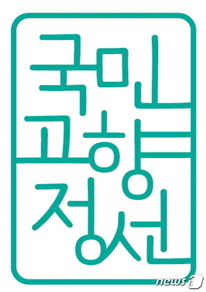
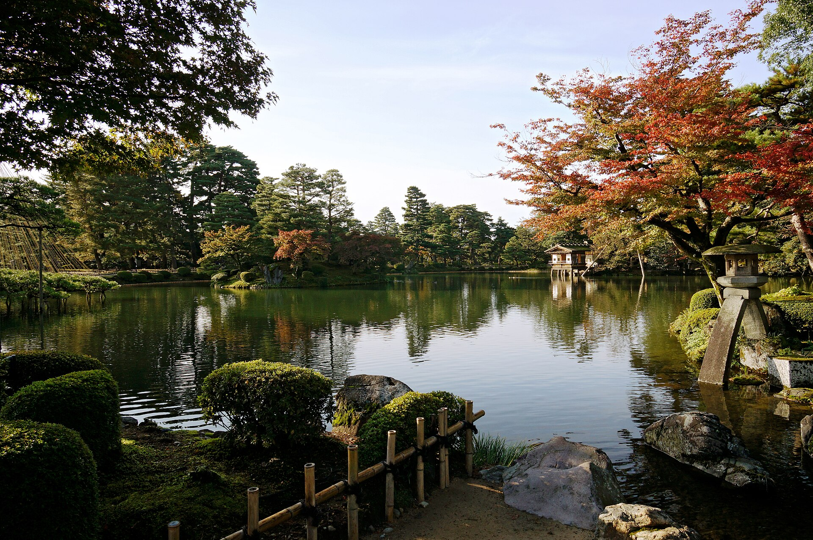
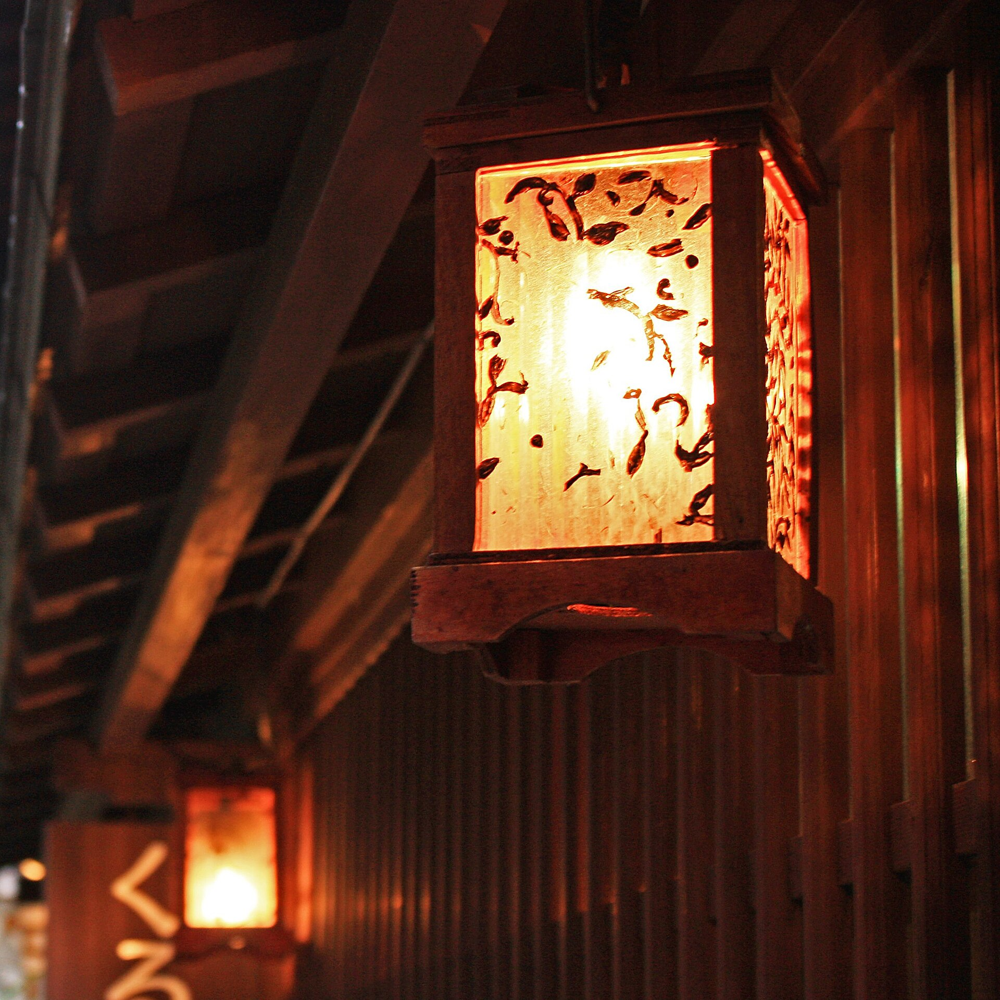

1일차 · 가나자와
코코호텔 프리미어 가나자와 코린보
코린보 중심가. 겐로쿠엔·가나자와성과 가깝습니다. 4성급 시내 호텔.

| 일자 | 상세 탐방 일정 및 동선 | 식사 |
|---|---|---|
| 1일차 10/26 (월) |
12:25 인천국제공항 T2 출발 (진에어 LJ9397)
14:15 도야마공항 도착 · 입국 수속 후 가이드 미팅
호텔명 : 코코호텔 프리미어 가나자와 코린보 (2인 1실)
|
조:
- 중:
- 석:
샤브샤브 |
| 2일차 10/27 (화) |
전일 호텔 조식 후 알펜루트 이동
호텔명 : 쿠로베뷰 호텔 (온천 · 2인 1실)
|
조:
호텔식 중:
장어덮밥 석:
호텔식 |
| 3일차 10/28 (수) |
전일 호텔 조식 후 가미코치 이동
호텔명 : 머큐어 도야마 토나미 리조트&스파 (2인 1실)
|
조:
호텔식 중:
철판구이 석:
호텔식 |
| 4일차 10/29 (목) |
전일 호텔 조식 후 체크아웃
13:00 도야마 출발 (진에어 LJ9398)
15:20 인천국제공항 도착
|
조:
호텔식 중:
- 석:
- |
휴대폰 카메라로 스캔하면 일정·동선·날씨·환율·회화가 담긴 가이드북이 열립니다.

2026.10.26(월) ~ 10.29(목) | 3박 4일
이사 10명 · 인천 도야마 직항 · 진에어
인천공항 T2 3층 출국장 미팅 · 현지 가이드 미정
다테야마역에서 오기자와까지 케이블카·고원버스·로프웨이·트롤리버스로 해발 2,450m 무로도와 구로베댐을 잇는 일본 북알프스 산악 루트입니다.
가을 단풍 시즌가미코치의 다이쇼이케와 갓파바시, 다카야마 옛거리, 유네스코 세계문화유산 시라카와고 합장촌을 하루에 이어서 둘러봅니다.
세계유산 · 산악 산책첫날 겐로쿠엔·히가시차야, 이후 오마치 온천과 토나미 리조트에서 온천욕으로 산행 피로를 풀 수 있는 구성입니다.
온천 2박 포함진에어 LJ9397
인천 12:25 도야마 14:15
진에어 LJ9398
도야마 13:00 인천 15:20
항공 스케줄은 실시간 기준이며, 항공사 사정에 의해 다소 변경될 수 있습니다.
미팅 장소
인천국제공항 제2터미널 3층 출국장. 집결 시각은 가이드가 별도로 안내합니다.
여권
유효기간 6개월 이상. 일본 관광은 사증이 필요하지 않습니다.
기내 수하물
100ml 초과 액체류는 위탁. 보조배터리는 기내 휴대만 가능합니다.
입국심사와 세관신고를 하나의 QR코드로 진행합니다. 출국 전 가정에서 등록해 두면 도야마 도착 후 수속이 수월합니다.
통합 QR
실제 도로를 따라 이동 순서가 천천히 그려집니다. 일자 버튼을 누르면 해당 구간만 볼 수 있습니다.
전체 여정 — 인천에서 도야마, 알펜루트와 시라카와고를 잇는 동선
탭을 눌러 일자별 상세 내용을 확인하세요.
인천 → 도야마 → 겐로쿠엔 → 히가시차야 → 숙소


제2터미널 3층 출국장에서 모입니다. 집결 시각은 가이드가 별도로 안내합니다.
인천 12:25 출발, 도야마 14:15 도착. 입국 수속 후 전용 차량으로 가나자와로 이동합니다.
마에다 가문이 가꾼 일본 3대 정원입니다. 가을에는 단풍과 연못, 겸육의 경관을 함께 볼 수 있습니다.
에도시대 찻집 거리가 남은 가나자와 대표 골목입니다. 목조 격자 가옥을 따라 걷습니다.
샤브샤브 석식 후 코코호텔 프리미어 가나자와 코린보 (2인 1실)
상기 상세 일정은 항공 및 현지 사정에 의해 변동될 수 있습니다.
2인 1실 · 온천 숙박 포함
1일차 · 가나자와
코린보 중심가. 겐로쿠엔·가나자와성과 가깝습니다. 4성급 시내 호텔.
2일차 · 오마치 온천
알펜루트 거점 오마치의 온천 호텔. 대욕장(수영복 불필요) · 석식 호텔식.
3일차 · 토나미
도야마현 토나미의 온천 리조트. 뷔페 · 천연 온천 · 실내 대욕장. 체크인 15:00 · 체크아웃 11:00.
숙소는 현지 사정에 따라 동급으로 변경될 수 있습니다.
다테야마 구로베 알펜루트 공식 영상으로 무로도 미쿠리가이케의 분위기를 먼저 만나 보세요. 2일차 횡단과 같은 산악 루트입니다.
로딩중
0 원
※ 기준 환율: 실시간 데이터 로딩중...
--°C
업데이트 중...
10월 하순 도야마 시내는 선선하고, 알펜루트 무로도(2,450m)는 한겨울에 가깝습니다. 패딩·모자·장갑을 꼭 챙기세요.
개인 용돈 참고용이며, 일정 식사와는 별개입니다.
현장에서 바로 쓸 수 있는 10문장입니다.
기기를 종료해도 체크 상태와 메모가 이 스마트폰에 저장됩니다.
현지 안내
가이드 미정
현지 가이드 · 미정
공관 · 병원
주나고야대한민국총영사관
+81-52-211-5311
도야마현립중앙병원
+81-76-424-1531
투어메이커 안전 매뉴얼(T-safe24)은 사용자 실행형 긴급지원입니다. 상시 추적이 아니라, 필요할 때 위치 공유와 인근 병원 탐색에 활용합니다.
종이 일정표 대신 스마트 가이드북을 선택한 오늘, 1인당 평균 아래 자원을 줄입니다.
8장
종이 절감
38 g
탄소 감소
75 L
물 절약